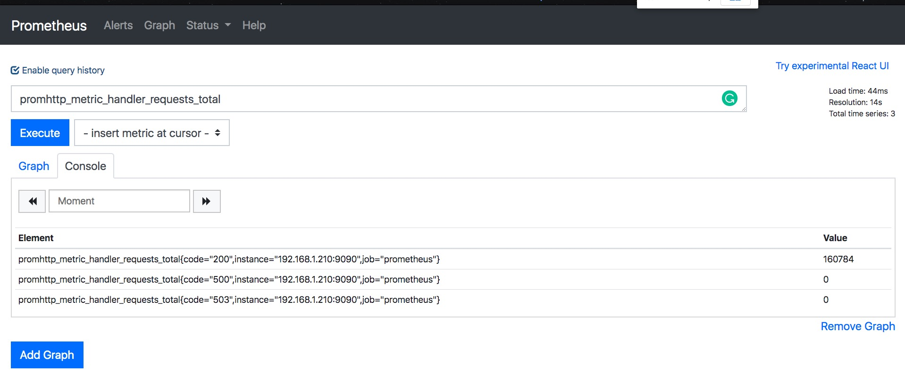
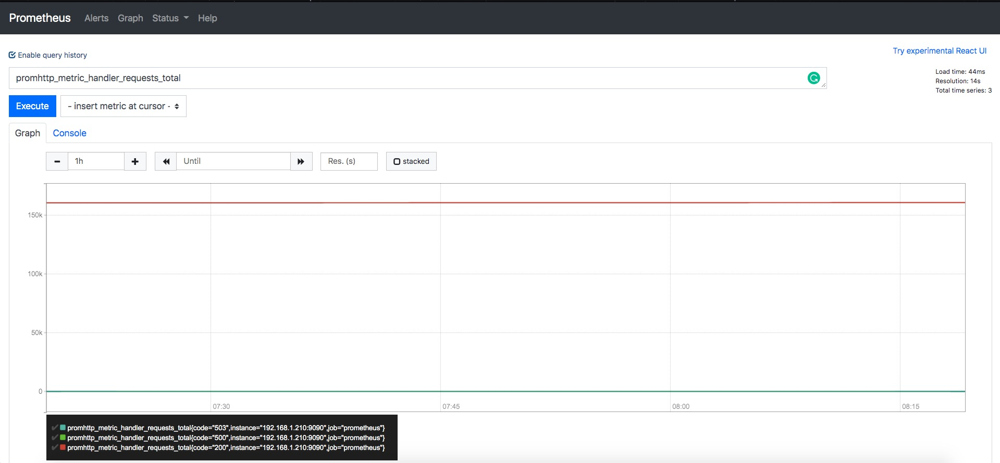

Prometheus安装与配置¶

二进制安装¶
Prometheus 版本迭代很快，当前的最新版本是 2.19.0，我们这里使用的 Prometheus 版本是 2.19.0。
# 创建Prometheus工作目录
useradd -s /usr/sbin/nologin prometheus
mkdir -p /data/prometheus/{bin,conf,data,log,rules}
chown -R prometheus.prometheus /data/prometheus
cd /data/prometheus/
# 下载二进制包文件
wget https://github.com.cnpmjs.org/prometheus/prometheus/releases/download/v2.19.0/prometheus-2.19.0.linux-amd64.tar.gz
tar xvf prometheus-2.19.0.linux-amd64.tar.gz
# 简单的启动测试
./prometheus --config-file='config.yaml'
# systemd配置文件
cat > /lib/systemd/system/prometheus.service <<EOF
[Unit]
Description=Prometheus
Documentation=https://prometheus.io/
After=network.target
[Service]
Type=simple
User=prometheus
ExecStart=/data/prometheus/bin/prometheus \
--config.file=/data/prometheus/conf/prometheus.yml \
--web.enable-lifecycle \
--storage.tsdb.path=/data/prometheus/data \
--web.external-url=http://prom.prometheus.cool \
--storage.tsdb.retention=90d
ExecReload=/bin/kill -HUP $MAINPID
Restart=on-failure
[Install]
WantedBy=multi-user.target
EOFDocker安装¶
# 创建目录
wget -O /data/prometheus/config/prometheus.yml \
https://raw.githubusercontent.com/prometheus/prometheus/master/documentation/examples/prometheus.yml
chown -R prometheus.prometheus /data/prometheus/
# 权限问题：
$ docker exec -it prometheus sh
/prometheus $ id
uid=65534(nobody) gid=65534(nogroup)
# 启动
docker run -d --restart=always \
--name=prometheus \
-p 9090:9090 \
-v /data/prometheus/config/:/etc/prometheus/ \
-v /data/prometheus/data:/prometheus \
-v /etc/localtime:/etc/localtime:ro \
prom/prometheus \
--config.file=/etc/prometheus/prometheus.yml \
--storage.tsdb.path=/prometheus \
--web.console.libraries=/etc/prometheus/console_libraries \
--web.console.templates=/etc/prometheus/consoles \
--storage.tsdb.retention.time=200h \
--web.enable-lifecycle
Docker-compose管理¶
cat docker-compose.yml
version: '3.1'
services:
prometheus:
image: prom/prometheus
volumes:
- ./config:/prometheus
- ./data/prometheus:/data
command:
- '--config.file=/prometheus/prometheus.yml'
- '--storage.tsdb.path=/data'
ports:
- 9090:9090
depends_on:
- alertmanager
restart: always
networks:
- promnet
alertmanager:
image: prom/alertmanager
volumes:
- ./config:/prometheus
- ./data/alertmanager:/data
command:
- '--config.file=/prometheus/alertmanager.yml'
- '--storage.path=/data'
ports:
- 9093:9093
networks:
- promnet
node:
image: prom/node-exporter
ports:
- 9100:9100
restart: always
networks:
- promnet
cadvisor:
image: google/cadvisor
ports:
- 9880:8080
volumes:
- /:/rootfs:ro
- /var/run:/var/run:rw
- /sys:/sys:ro
- /var/lib/docker/:/var/lib/docker:ro
networks:
- promnet
collectd:
image: prom/collectd-exporter
ports:
- 9103:9103
restart: always
networks:
- promnet
alerta:
image: alerta/alerta-web
ports:
- 9080:8080
depends_on:
- db
environment:
- DEBUG=1 # remove this line to turn DEBUG off
- DATABASE_URL=mongodb://db:27017/monitoring
# - AUTH_REQUIRED=True
- ADMIN_USERS=admin@alerta.io
- PLUGINS=remote_ip,reject,heartbeat,blackout,prometheus
- ALERTMANAGER_API_URL=http://alertmanager:9093
restart: always
networks:
- promnet
- dbnet
db:
image: mongo
volumes:
- ./data/mongodb:/data/db
restart: always
networks:
- dbnet
networks:
promnet:
driver: bridge
dbnet:
driver: bridgePrometheus参数说明¶
--version
显示当前应用程序版本号.
--config.file="prometheus.yml"
指定Prometheus配置文件路径
--web.listen-address="0.0.0.0:9090"
监听API、UI、telemetry地址
--web.read-timeout=5m
读取超时与最大连接数的关闭时间
--web.max-connections=512
当前连接的最大连接数
--web.external-url=<URL>
配置Prometheus外部访问的URL
--web.route-prefix=<path>
WEB节点的内部路由前缀.默认路径是 --web.external-url.
--web.user-assets=<path>
静态资源目录的路径，位于/user
--web.enable-lifecycle
启用重载配置文件
--web.enable-admin-api
为ADMIN启用API访问
--web.console.templates="consoles"
console模板目录的路径，位于/consoles
--web.console.libraries="console_libraries"
console 库存储路径
--web.page-title="Prometheus Time Series Collection and Processing Server"
Prometheus的文档示例标题
--web.cors.origin=".*"
用于CORS来源的正则表达式. Example: 'https?://(domain1|domain2).com'
--storage.tsdb.path="data/"
TSDB指标数据存储路径
--storage.tsdb.retention=STORAGE.TSDB.RETENTION
数据保留时间.此项参数已经被弃用, 使用 storage.tsdb.retention.time.
--storage.tsdb.retention.time=STORAGE.TSDB.RETENTION.TIME
数据保存多长时间。开启此设置，它将覆盖“ storage.tsdb.retention”。如果 storage.tsdb.retention 或 storage.tsdb.retention.size 都未开启，则数据保留时间默认为15天。
--storage.tsdb.retention.size=STORAGE.TSDB.RETENTION.SIZE
块存储的最大字节数，支持的单位KB，MB，GB，TB，PB；此参数仅为测试。
--storage.tsdb.no-lockfile
不在数据目录创建锁文件
--storage.tsdb.allow-overlapping-blocks
允许重叠的Blocks，从而启用垂直压缩和垂直查询合并。
--storage.tsdb.wal-compression
压缩 tsdb WAL.
--storage.remote.flush-deadline=<duration>
关闭或配置重载时的等待时间
--storage.remote.read-sample-limit=5e7
在单个查询中通过远程读取接口返回的最大样本总数. 0表示没有限制.对于流式响应类型，将忽略此限制.
--storage.remote.read-concurrent-limit=10
并发远程读取调用的最大数. 0表示没有限制.
--storage.remote.read-max-bytes-in-frame=1048576
编组之前用于流式传输远程读取响应类型的单个帧中的最大字节数。请注意，客户端也可能会限制帧大小。默认为protobuf建议的1MB
--rules.alert.for-outage-tolerance=1h
容忍Prometheus中断恢复警报 for 状态的最长时间。
--rules.alert.for-grace-period=10m
警报和恢复的 for 状态之间的最短持续时间。仅对于配置的 for 时间大于限期的警报，此状态才会有效。
--rules.alert.resend-delay=1m
警报重新发送到Alertmanager之前等待的最小时间.
--alertmanager.notification-queue-capacity=10000
等待的Alertmanager通知的队列数.
--alertmanager.timeout=10s
向Alertmanager发送警报的超时时间.
--query.lookback-delta=5m
表达式求值期间检索指标的最大回溯持续时间
--query.timeout=2m
查询中止前需要花费的最长时间
--query.max-concurrency=20
并发执行的最大查询数
--query.max-samples=50000000
单个查询可以加载到内存中的最大样本数。注意：如果查询尝试将更多的样本加载到内存中，则查询将失败，因此这也限制了查询可以返回的样本数。
--log.level=info
记录日志级别，可选参数: [debug, info, warn, error]
--log.format=logfmt
日志消息的输出格式. 可选参数: [logfmt, json]
配置文件说明¶
# https://prometheus.io/docs/prometheus/latest/configuration/configuration/
# 全局配置
global:
scrape_interval: 30s # 秒抓取一次数据，默认值为1分钟
scrape_timeout: 30s # 抓取超时时间
evaluation_interval: 60s # 每15分钟检测一次可用性，默认值为1分钟
#scrape_timeout: 60s # 全局设置超时时间，这个注掉了。
external_labels: # 联邦的label标识，可以附加在警报中，这样用于标识警报来源于那个Prometheus或Alertmanager
dc: prom-master
# Alertmanager配置，需要在targets添加ip和端口，也可以使用主机名和域名
alerting:
alertmanagers:
- static_configs:
# 此处可以配置成集群模式，也可以使用单一节点，后续会在Alertmanager章节详细讲解如何做Alertmanager集群高可用
- targets: ['127.0.0.1:9097']
#- targets: ['127.0.0.1:9098']
#- targets: ['127.0.0.1:9099']
# 根据全局文件 'evaluation_interval' 的时间，根据 rule 配置文件进行检查，可配置多个。
# 可以没有配置文件，但是目录必须存在。
rule_files:
- "/data/prometheus/rule_ssl/*.yml"
- "/data/prometheus/rule_prod/*.yml"
# 抓取配置配置
scrape_configs:
- job_name: 'http_200_monitor'
metrics_path: /probe
params:
module: [http_2xx] # 探测 HTTP POST 200 响应配置模块，返回值必须是200
scrape_interval: 30s # 抓取时间
file_sd_configs:
- files:
# 此处为blackbox 探测域名配置文件
- /data/prometheus/domain_config/get.yml
relabel_configs:
- source_labels: [__address__]
target_label: __param_target
- source_labels: [__param_target]
target_label: instance
- target_label: __address__
replacement: 127.0.0.1:9115 # blackbox exporter的IP、端口.
- job_name: 'http_post_200_monitor'
metrics_path: /probe
params:
module: [http_post_2xx_query] # 探测 HTTP POST 200 响应配置模块.
scrape_interval: 30s
file_sd_configs:
- files:
- /data/prometheus/prod_config/domain_config/post.yml
relabel_configs:
- source_labels: [__address__]
target_label: __param_target
- source_labels: [__param_target]
target_label: instance
- target_label: __address__
replacement: 127.0.0.1:9115
# consul 抓取规则
- job_name: 'prod'
metrics_path: /metrics
honor_labels: false
consul_sd_configs:
- server: '172.x.x.x:8500'
token: '2222-3333-5555-7777-99999'
services: []
relabel_configs:
- source_labels: ['__address__']
regex: (.*):(.*)8300
action: drop
- source_labels: ['__meta_consul_service']
regex: '(.*)'
target_label: 'service'
replacement: '$1'
- source_labels: ['__meta_consul_service_address']
regex: '(.*)'
target_label: 'instance'
replacement: '$1'
- source_labels: ['__meta_consul_service_port']
regex: '(.*)'
target_label: 'instance'
replacement: '$2'
- source_labels: ['__meta_consul_tags']
regex: ".*,(.*),.*"
replacement: '${1}'
target_label: 'app'验证¶
打开Prometheus web页面，在Console中使用 Metrics promhttp_metric_handler_requests_total 进行演示，这个 Metrics 是 prometheus 自身的 http 请求数。

切换到Graph，可以看到Metrics的曲线图。

Prometheus服务重载¶
Prometheus 对于更新配置文件，需要服务重启，如果在生产环境，随便重启服务是不可取的，因此需要热加载功能。
2.0 以后，热加载功能默认是关闭的，如需开启，需要在启动 Prometheus的时候，添加 --web.enable-lifecycle 参数。
curl -X POST http://192.168.1.210:9090/-/reload